In the previous lecture we learned the basics of compartmental modeling of neurons, including Hodgkin-Huxley models of voltage activated channels. In this lecture and the following one, we will talk about what goes on in the dendrites and how this relates to the behavior of more complex cells and networks.
The image of the pyramidal cell from the CA3 region of the hippocampus that we looked at in the last lecture is just one of the many varieties of neurons that one might want to model. Here are some others:
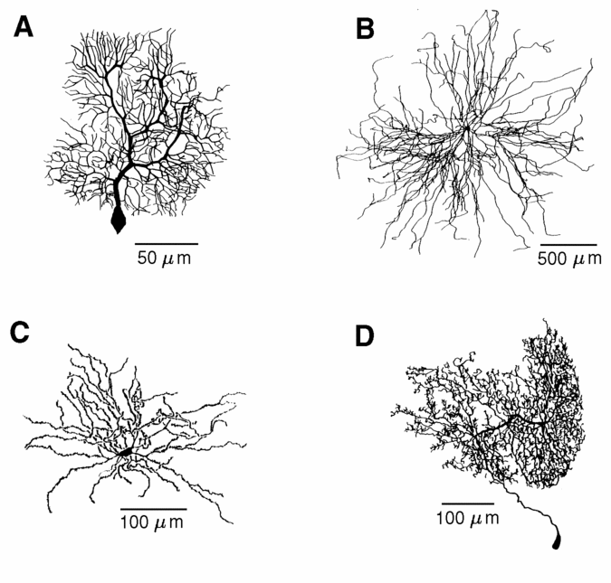
The many varieties of dendritic structure that are seen in these cells has a great deal to do with their functional role -- i.e., the types of "neural computations" that are performed.
There are four main steps to perform in order to build a realistic model neuron, and to connect it to others in biologically realistic network.
Step 2 is difficult. Chapter 5 of "The Book of GENESIS" ("the BoG"), which was assigned as reading for this lecture, gives some useful information for answering the two questions. This chapter (Segev, 2005) is also very mathematical, and it is easy to get lost in the equations and forget what they are used for. I wanted you to read it in order to get an overview of the theory of passive propagation in dendrites. Now, I'll list what I think is important for you to remember. There are three things that can be measured experimentally and are related to the parameters that we need for a model:
This slide gives a summary of the electrical properties of a uniform section of passive dendrite having length l and diameter d.
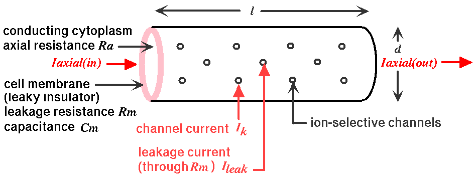
The conducting cytoplasm inside the neuron, the insulating neural membrane, and the liquid (similar to salt water) surrounding the neuron form a cable with a capacitance Cm. The inner conductor, the cytoplasm, is a poorer conductor than the copper wire used in an undersea cable, and it has an resistance along the length of the cable Ra, the "axial resistance". The membrane in not a perfect insulator due to the ion-conducting channels that pass through it. It is convenient to make a distinction between the "passive channels" that do not vary in conductance, and the "active channels" that have conductances varying with voltage, calcium concentration, or synaptic input. The passive channels account for the membrane resistance Rm and the associated leakage current Ileak. The active channels are represented by the various variable conductances that are labeled as Gk in the neural compartment diagram and the differential equation for Vm that we described in the previous lecture:

Some Notation
The quantities Rm, Ra, Cm, Vm, etc. that appear in the diagram and equation are given in ohms, farads, or volts, and will depend on the size of the compartment. In order to specify parameters that are independent of the compartment dimensions, specific units are used. For a cylindrical compartment, the membrane resistance is inversely proportional to the area of the cylinder, so we define a specific membrane resistance RM, which has units of ohms·m². The membrane capacitance is proportional to the area, so it is expressed in terms of a specific membrane capacitance CM, with units of farads/m². Compartments are connected to each other through their axial resistances Ra. The axial resistance of a cylindrical compartment is proportional to its length and inversely proportional to its cross-sectional area. Therefore, we define the specific axial resistance RA to have units of ohms·m.
For a piece of dendrite or a compartment of length l and diameter d we then have
WARNING: Many treatments of the passive properties of neural tissue use the symbols Rm, Ra, and Cm for the specific resistances and capacitance, instead of this notation with RM, RA, and CM. Also, many textbooks and journal papers define the resistance and capacitance in terms of that for a unit length of cable having a specified diameter.
Sections 5.3 through 5.5 in BoG Chapter 5 describes how sections of dendrite can be modeled using the one-dimensional cable equation. For some additional background with more details than are given in this lecture, see the Digression on Cable Theory of Passive Propagation in Dendrites.
The relationships between the original neuron and a cable model or a compartmental models are shown in BoG Figure 5.4:
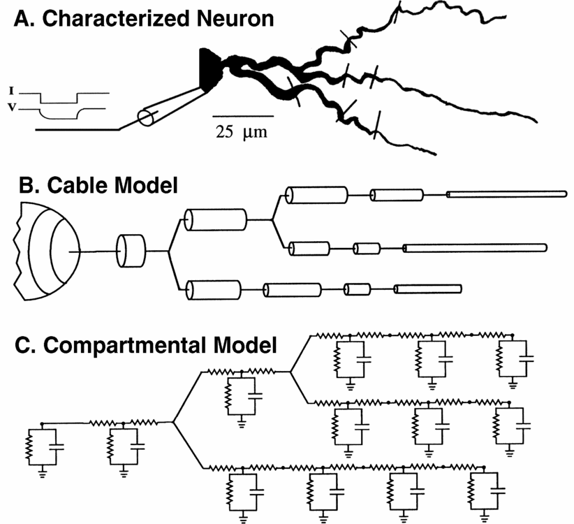
Equation 5.13 in the BoG gives the attenuation of voltage with distance x along an infinitely long uniform section of dendrite, in terms of the "space constant" (or "length constant"), which is given in Equation 5.7. Together, they give:
This result is useful for determining the length of the compartments that are used to model a section of dendrite. Sections of dendrite that have a continuous variation of voltage along the length are being replaced by a "lumped parameter model" with discrete jumps in membrane potential. By using very many short compartments, the compartmental model can approach the result of the continous cable equation. But, for computational efficiency, one would like to use fewer compartments with a length that gives reasonable accuracy. A common guideline used by modelers is to use a compartment length that is less than 1/20 of the space constant. In that case, the voltages in two adjacent compartments will differ by a factor of exp(-0,05) = 0.9512, or by about 5%.
Usually one assumes that the values of CM, RM, and RA are the same in all compartments, as they are intrinsic properties of the neural membrane and cytoplasm. CM depends on the intrinsic properties of the thickness and dielectric constant of the membrane, and is usually close to 0.01 F/m2.
Part A of the figure above shows a current injection pulse being injected into the soma of the neuron, and the meaured change in membrane potential. Can you guess why it is a hyperpolarizing pulse, and not a depolarizing one?
This chapter describes two quantities that may be calculated from this meaurement. BoG Equation 5.8 gives the membrane time constant for a short uniform section of dendrite.
Note that it is independent of the dimensions of the section, because Rm is inversely proportional to the surface area, and Cm is proportional to the surface area. This has importance for determining the time that it takes for ionic currents to produce changes in the membrane potential, and is also a measurement that can be made to estimate values for RM.
If the neuron were a simple spherical soma with little dendritic structure, it could be modeled with a single compartment, and the decay of the voltage after the current pulse would be given by an exponential involving the membrane time constant.
so it should be a simple matter to measure the membrane time constant and to estimate RM. The situation is more complicated for long cables or branched dendritic structures, but BoG Section 5.4.2 describes how the solution to the cable equation in the more general case can be expressed in terms of a sum of exponentials with different time constants (Eq. 5.20) and that the longest time constant in the series is just the membrane time constant, RM·CM.
This can be illustrated with the GENESIS Cable tutorial simulation, which allows one to construct an extensible neuronal cable. Current injection or synaptic input may be provided to any one of the compartments, and all relevant parameters are adjustable from "pop-up" menus. In the figure below, a passive cable was created with a soma and 10 identical dendrite compartments. A 50 picoampere current injection pulse was applied to the soma, and the resulting membrane potential and its natural log were plotted for the soma and the most distal dentrite compartment
Note that the log plot becomes linear at longer times, when the term in the series with the largest time constant dominates. From the slope of this line, you should be able to calculate that the membrane time constant 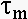 is about 10 msec, which is the value of RM·CM. These plots will also let you calculate the voltage attenuation with distance, and compare it with the predicted results for an infinitely long cable using the value of the space constant 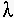 and the parameter values that are shown above.
The input resistance of a neuron at the point of a current injection pulse is given by Ohm's law from the change in membrane potential after it has reached a steady state.
What is the input resistance of this cable, as measured at the soma? This is another measureable quantity that can help to provide values for RM and RA. If we were dealing with a neuron that could be modeled as a single soma compartment, then the input resistance would simply be given by the membrane resistance, Rin = Rm = RM/area. When there are other compartments, then the axial resistances and membrane resistances of these compartments also add to the resistive load, and the expression becomes more complicated. For a simple model with a few compartments, circuit theory can be used to calculate Rin in terms of RM, RA, and the compartment dimensions. BoG Section 5.4.4 gives the result for an infinite cable (Equation 5.24) and a finite cable (Equation 5.26), and discusses conditions under which a branched dendritic structure can be approximated by a single finite cable. This is useful when constructing simple "ball and stick" models of neurons with a soma having the appropriate surface area of the actual cell soma, connected to a linear chain of cylindrical dendrite compartments. These are designed to provide a "collapsed dentritic tree" with the same passive properties of a much more detailed model made from a reconstruction of a measured cell morpholgy.
However, this is not of much help when dealing with a detailed morphologically accurate model, such as the De Schutter and Bower (1994) Purkinje cell model. The figure below shows a run of the GENESIS Purkinje cell tutorial simulation, with a current injection pulse applied to the soma. The plots were performed in overlay mode to show the results of both a depolarizing pulse of 1 nA, and a hyperpolarizing pulse of -1 nA.
Now, is it clear why hyperpolarizing pulses are used? The depolarizing pulse causes the the voltage-activated channels to open, causing the cell to fire. The hyperpolarizing pulse deactivates the channels, and allows one to see the passive properties. (Even this may not be enough to completely get rid of the effects of active channels. Often one applies channel blockers to block any channels that are active at low membrane potentials.) What is the input resistance of this neuron? When fitting parameters for a model of this complexity, it is common to inject current pulses of various amplitudes into the neuron being modeled while recording the membrane potential. The simulation is then run under similar conditions, and automated parameter searches are performed to adjust CM, RM, and RA to give the best fit of the simulated Vm with the experimental results.
Further details of the process of constructing realistic single cell models are given in a downloadable tutorial paper by Jaeger (2005).
The next step is to model synaptically (chemically) activated channels. The variable conductance in the generic compartment diagram could also represent a synaptically activated cconductance, usually in a dendritic compartment.
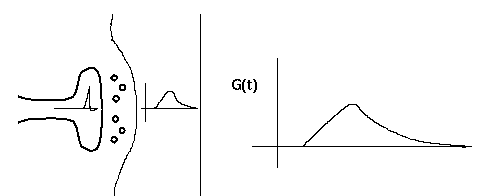
This diagram shows a synapse with an action potential propagating to the pre-synaptic terminal, causing neurotransmitter release, and the resulting post-synaptic conductance change, G(t). Current flow through this conductance can lead to a post-synaptic potential (PSP).
There is a lot of biochemistry and molecular biology involved in this behavior, often involving complicated chains of reactions and 'second messengers'. Fortunately, we can often use an empirical fit to the observed behavior, rather than modeling it in detail.
Typically, the conductance change from a quantum of neurotransmitter follows a linear rise and exponential decay, so it is often modeled with a so-called "alpha" function with a single time constant, tau.
Sometimes, a dual exponential function will be used:
The current due to this conductance is I = G·(Ek - Vm), which may be into or out of the cell, depending on the size of the ionic equilbrium potential Ek, relative to the membrane potential. Here we have adopted the convention that a positive current flows into the cell. Thus, if the Ek is large (Na or Ca), the current will be into the cell, and it will be a depolarizing (excitatory) synapse. If it is large and negative (Ek < Vm, as for potassium), it will be an inhibitory synapse. So, we can use the same model for both types of synapses.
If we were interested in understanding the details of axonal propagation we could model an axon as a series of linked compartments containg Hodgkin-Huxley Na and K conductances. We can model synaptic connections more efficiently if we treat an axon as just a delay line for the propagation of spike events that are triggered by action potentials and that last for a single time step.
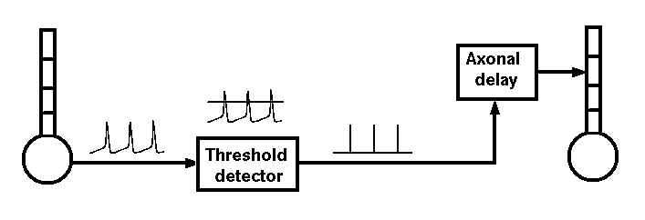
Some simulations demonstrating the effects of
synaptic input
We'll use the alpha function form in a GENESIS tutorial simulation called
"Neuron" in order to understand both temporal and spatial summation of
synaptic inputs.
Although we won't do it here, the simulation that I'll describe will also let you experiment with "silent inhibition" (shunting inhibition), in which there can be an inhibitory effect when there is no PSP, or even a slightly depolarizing one. Do you know how this can happen?
Another thing that we can do in this simulation is to scale the conductance by a "synaptic weight" factor. This would let us experiment with the effect of multiple inputs in synchrony, or with learning (synaptic plasticity) by varying the weight.
Another time constant that is relevant for determining the properties of the cell is the membrane time constant, Rm·Cm. This represents the time that it takes to charge up and to discharge the membrane capacitance, and will also affect the duration of a post-synaptic potential. We could also use the Neuron simulation (but won't here) to see what happens if you have a small time constant for synaptic activation and a large membrane time constant.
This simulation has a help menu that can show a schematic diagram of the model neuron and the types of inputs that we can give to it.
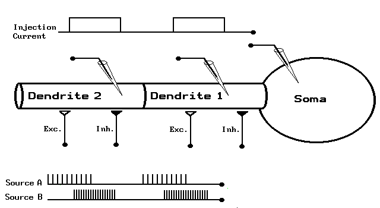
We have a simple model neuron with a soma and two dendrite compartments that are connected by axial resistances, as well as the option of putting any number of passive cable compartments between these two dendrite compartments. These passive compartments are like the ones shown, but have no variable conductances. This will let us see what happens if we have spatially separated inputs to the neuron. The soma has Hodgkin-Huxley voltage activated channels like the ones we used in the last simulation, and the dendrite compartments have both excitatory and inhibitory synaptically activated channels that respond to spikes applied at the synapses. Not only can we change the various parameters of the cell by popping up menus, but we can apply different types of stimulation. For example, we can inject pulses of current into any of the compartments, or connect spike trains to any of the synapses with a specified weighting. We'll start by applying a burst of spikes 10 milliseconds apart to the Excitatory synapse in the first dendrite section.
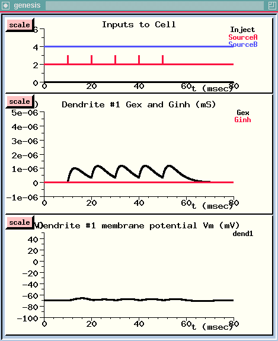
The spike train starts after 10 milliseconds. {UPPER WINDOW}
We can see that each spike causes a rise and decay in the conductance of this channel. {MIDDLE WINDOW}
However, the conductance decays before the postsynaptic potential can build up to a very high level. {LOWER WINDOW}
The persistence of a PSP is determined not only by the decay constant of the conductance, but also by Rm·Cm, the rate at which the voltage across the membrane capacitance is discharged through the membrane resistance. In this simulation, tau for the decay of the excitatory synaptic conductance is 3 msec, and Rm·Cm is 5 msec. Both of these are less than the spike interval. So, let's see what happens if we make the input spikes come four times as fast.
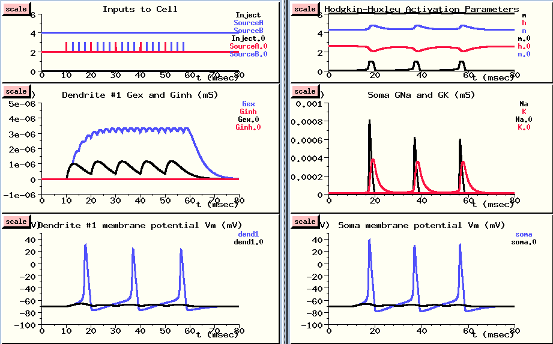
This is done in overlay mode, with the new results plotted in blue, so we can compare them with the previous results. (However, the plots of activation parameters and soma conductances were not overlayed, in order to keep the plots simple.)
Now, we are getting a good buildup of conductance as each increase adds to the previous one, and we see action potentials both in the dendrite compartment {LOWER LEFT} and in the soma {LOWER RIGHT}. Why do we see action potentials in the dendrite compartment? You might notice that the action potentials are a little higher in the soma. This is because the PSP in the dendrite is propagated to the soma, where the voltage activated channels cause the action potentials, and these are propagated back to the dendrite through an axial resistance. In the dendrite compartment, we're seeing a superposition of the small PSP produced here and the large action potential that is produced in the soma. If we were to look in a more distant dendrite section, the peaks would be much more attenuated. We'll do this in the next simulation run.
Now we'll explore the effects of summing spatially separated inputs to the neuron. Although it isn't shown on this diagram, I've added 5 passive cable sections between the two dendrite compartments, so dendrite compartment #2 is much further from the soma. With the dimensions and resistances that are used here, cable theory predicts that a voltage in this compartment will be attenuated by about 50% by the time it gets to the soma. This distance is 0.7 of the "length constant", so the attenuation is exp(-0.7), or about 50% Do you know how to calculate this? For the details, see the Digression on Cable Theory of Passive Propagation in Dendrites.
You may want to consult the neuron inputs diagram to remind yourself of the location of the three compartments.
I've set the interval for both sources of spike trains to 2 msecs, but I'll start applying Source A to the excitatory input of dendrite #2 right away, and wait 60 msec before applying Source B to the inhibitory input of dendrite #1.
Since the excitatory input is further away, we'll give it a fighting chance by giving it a higher synaptic weight. The weight of 40 means that we are scaling the conductance as if 40 synapses were being made at this point in the dendrite, and they are all getting the same input. The inhibitory input to dendrite #1 gets half this weight. We use this synaptic weighting because the input from a single synapse is rarely enough to fire an action potential, unless the cell is a motor neuron.
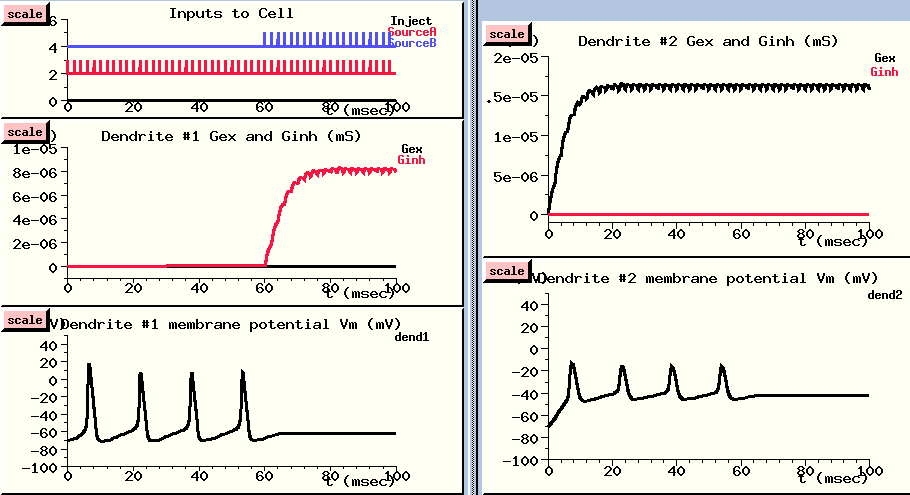
The excitatory spike train (in red) starts right away (Inputs to cell - UPPER LEFT), and causes a large buildup of conductance in the excitatory channel of the distal dendrite compartment {UPPER RIGHT}. This leads to a large increase in the membrane potential in this compartment - way above threshold.
This passively propagates to the soma where it produces action potentials. These are shown in slightly attenuated form in the nearby dendrite #1 compartment (LOWER LEFT), and in much more attenuated form in the distant dendrite #2 compartment (LOWER RIGHT). In this compartment, we can see the postsynaptic potential clearly, with the attenuated somatic action potentials superimposed.
After about 60 msec, the action potentials are disappearing. Let's look at our inputs and see what's happening. Now we are getting spikes to the inhibitory channel dendrite #1 {UPPER LEFT}. It produces a fairly small buildup of conductance {MIDDLE LEFT}, which produces a modest hyperpolaring influence in the compartment {LOWER LEFT}. But, since this compartment is close to the soma, it has a stronger effect than the depolarizing PSP in the distal dendrite compartment, and it stops the production of action potentials in the soma.
If we like, we can change the display to plot the soma membrane potential and see this directly.
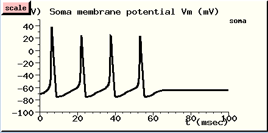
We've seen two properties of neurons that are relevant to understanding the ways which neurons compute:
Next, we will look at the behavior of more complex neurons that have a variety of active conductances in the dendrites, and conclude with a model of a cortical network.
 Next
lecture
Next
lecture
 Previous
lecture
Previous
lecture
 Return to the main page
Return to the main page
 Index of Lectures on Computational Neuroscience
Index of Lectures on Computational Neuroscience
 The GENESIS Home Page
The GENESIS Home Page {kind=link}
{kind=link}
{kind=link}